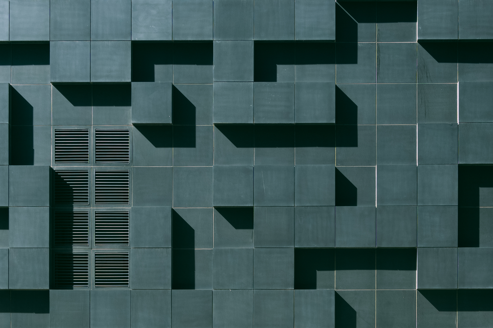
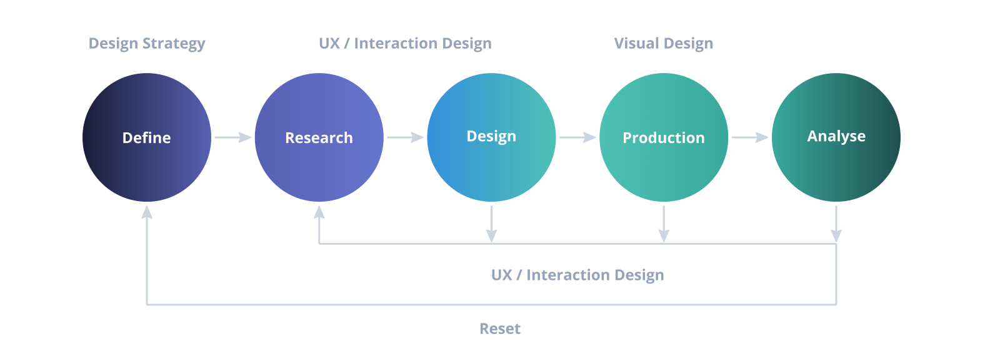
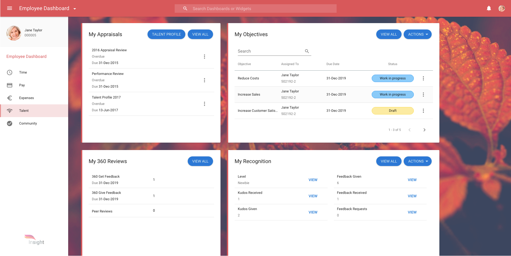
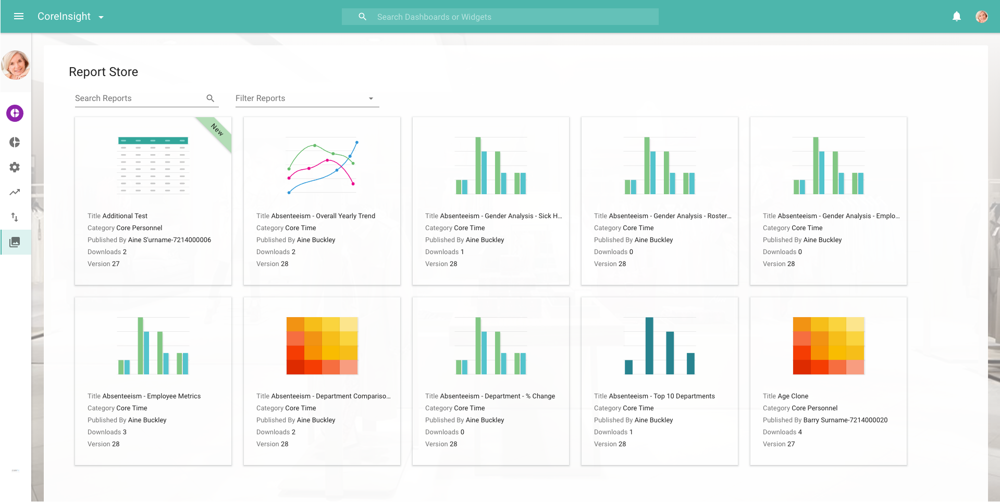
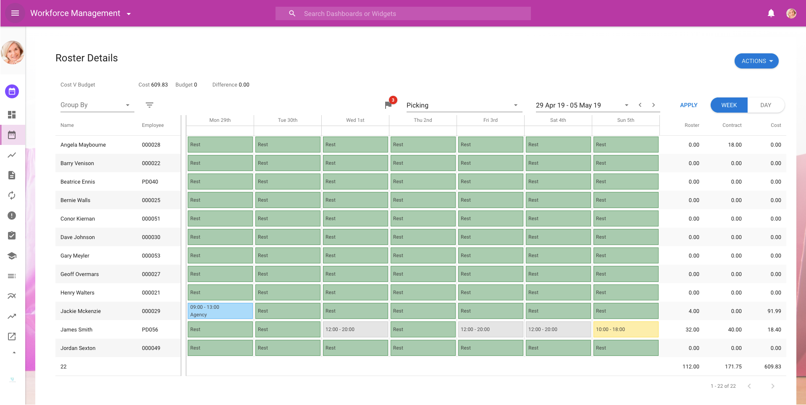

Enterprise Design
Product & UI Redesign of the Access PeopleXD end-to-end HR solution
with the aim of streamlining the front end user experience.
Background
Access PeopleXD ( formally CoreHR ) is an end-to-end HR solution with unified
payroll for UK and Irish businesses.
The application was entirely redesigned in almost every way from UI & UX
to architecturally with the aim of streamline the experience.
The visual redesign was based on Google’s Material Design language as previously
the application was not based on any language.
Access PeopleXD is a very large and in production application and converting it
was a huge undertaking and took several years.
My Role
- UI Designer & Prototyper
- Acted as a visual UI designer to
adapt Material Design to the needs's of the application.
- UX Designer
- Worked as a UX designer to contuct research, interview stakeholders,
conduct user testing & other field research.
- Design Evangelist
- Worked to bring product design into the arena of software development,
and as a standards gatekeeper.
- Accessibility Engineer
- Performed accessibility audits and continuous assesment of the production
application
Key Achievments
- Implemented a design process - This has
helped
teams establish structure
with designers embedded into sprint teams.
- Improved usability & Accessibility across the
Application.
Very little usability or accessibility testing was done during development or design
handoff.
We established automated accessibility testing and communicated the value of accessible
design
accros the application
- Became more of a design evangelist - We
worked to
bring the language of design to the fore of most discussions about any product.
We worked hard to develop a design language which can help the entire business.
Design consistency can help reduce the pressure on support teams, improve sales teams on
stage
appearance and much more besides.
- Design Systems - We created, maintained and
implemented a design system for the entire application. Using atomic design principles
we
brought
consistency and speed to the design and development of the application.
Design Process
We went through many iterations of improvised desighn processes and came to a conclusion.
There is no one size fits all soloution, we settled on a simplified version of the below
diagram.
The product suite is large, and we had to change the wheels while the car was on the road so to
speak.We were also working with a large number of dev and product teams.
Understanding Problems
Through detailed user research and speaking with users we gained many key insights which helped
define any given problem.
Recorded interviews with tools like dovetail help analyze what is said in the moment. We then
categorized feedback which helps group similar points of view.
Sample Design Process

Research Techniques
- Recorded Analysis - No matter how good your
notes are,there is no substitute to listening back to hear what was said and interpret what was
implied.
- Jobs To Be Done - A personal favourite of
mine is the Jobs To Be Done UX principle. It basically defines what the key accomplishments
of a given task are to the user.
- User and Company Personas - We worked to
create sets of user and company personas to keep the end user in mind for all teams.
- Iteration - Many key steps like
wireframing, journey mapping etc. have been omitted here for brevity but the main part for me is to
iterate. Speak to the customers again and again if they are willing. We have found this very
useful for improving pNPS score, experience
- Accessibility - You might have to
email me to ask me about how we handled accessibility, it is far too detailed for here!
Conclusions
This was a massive, multi year project, which is currently in its second iteration and live with
millions of users.
We monitor and gather in app feedback on a rolling basis and the overwhelming majority has been
positive.
It is of course not all positive but negative feedback is very useful to identify problems sets
and research target.
Some Concept Examples
Dashboards

Analytics

Work Froce Managment
